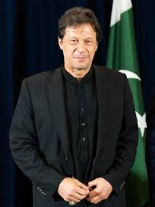

IMRAN KHAN

Imran Ahmed Khan Niazi is a Pakistani politician and former cricketer who served as the 22nd prime minister of Pakistan from August 2018 until April 2022.
He is the founder and former chairman of the political party Pakistan Tehreek-e-Insaf from 1996 to 2023.
Ealy life and Education
Imran Khan was born on October 5, 1952, in Lahore, Pakistan, into an affluent family. He was educated at Aitchison College in Lahore and later at the Royal Grammar School in the UK.
He went on to study at the University of Oxford, where he earned a degree in Philosophy, Politics, and Economics (PPE).
Cricket Career:
Imran Khan is widely regarded as one of the greatest cricketers of all time.
He captained the Pakistan national cricket team to victory in the 1992 Cricket World Cup, which remains one of the most significant achievements in Pakistan's sports history.
Philanthropy and Social Work:
Imran Khan is the founder of Shaukat Khanum Memorial Cancer Hospital & Research Centre (SKMCH&RC), established in 1994 in Lahore.
It is Pakistan’s largest cancer hospital and was founded with the goal of providing cancer treatment to the underprivileged.
Political Career:
Imran Khan entered politics in the mid-1990s and founded the Pakistan Tehreek-e-Insaf (PTI) party in 1996.
His political journey was initially slow, but PTI gained significant popularity over the years due to his stance on anti-corruption and pro-justice reforms.
Prime Minister of Pakistan:
Imran Khan became the 22nd Prime Minister of Pakistan in August 2018, after his party PTI won the general elections.
One of the central themes of Imran Khan's political narrative is the fight against corruption.
He has promised to bring about a "Naya Pakistan" (New Pakistan) through institutional reforms and increased accountability.
As Prime Minister, Imran Khan has focused on improving relations with neighboring countries, particularly India and Afghanistan.
He has advocated for peaceful resolutions to long-standing conflicts, especially on issues like Kashmir. He has also emphasized strengthening ties with China.
"I have always believed that a person’s greatness is determined by the obstacles they overcome in life."
~Imran Khan...
This quote reflects Imran Khan's belief in resilience and determination, which he has emphasized throughout his career,
both in cricket and politics. It also aligns with his personal narrative of overcoming challenges to achieve success.